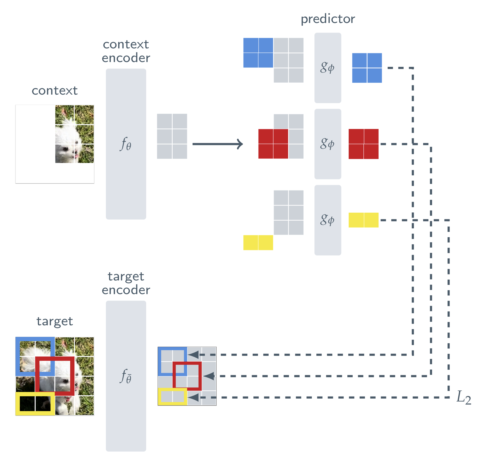
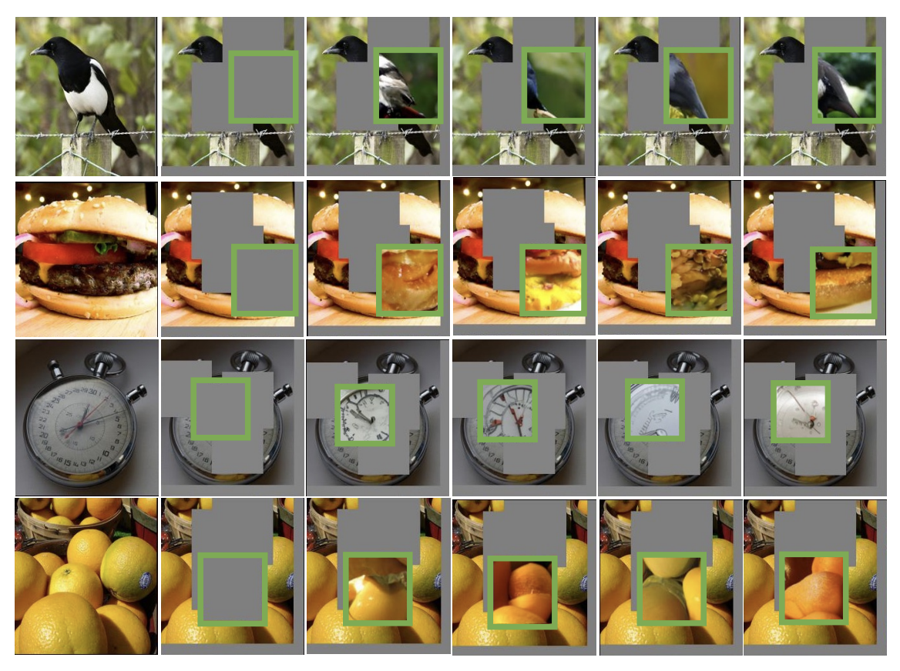
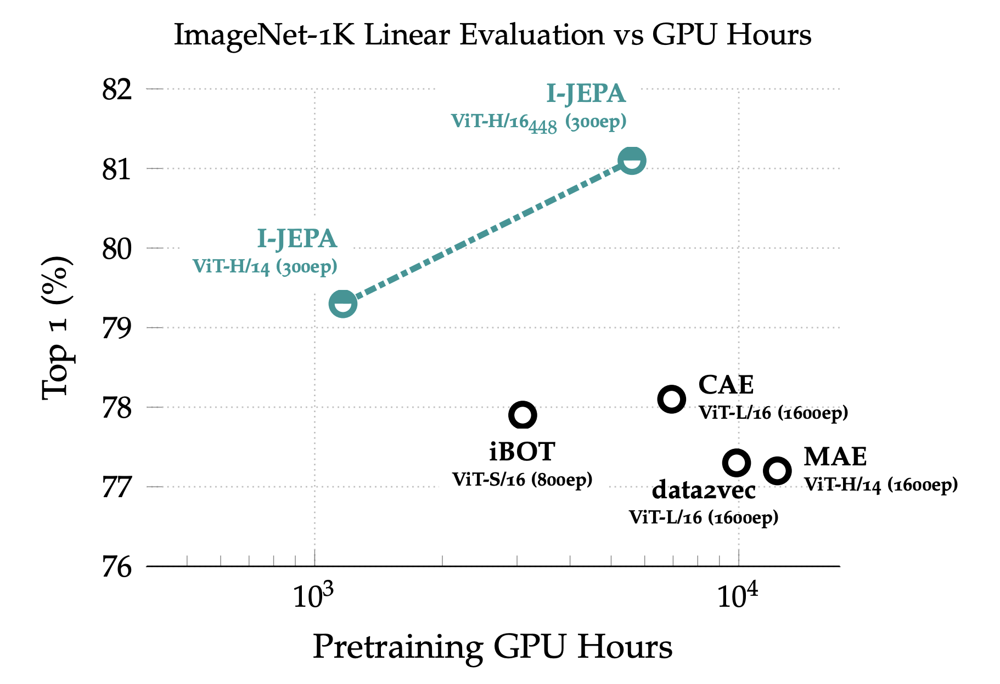

Self-Supervised Learning from Images with a Joint-Embedding Predictive Architecture
- Do we really need hand-crafted augmentations to learn good image representations?
- Should it predict pixels, or something more abstract?
- What makes a prediction task teach semantics rather than texture?
I-JEPA (Assran, Duval, Misra, Bojanowski, Vincent, Rabbat, LeCun and Ballas, January 2023) is the first working JEPA for images. It takes the main idea of A Path Towards Autonomous Machine Intelligence, predicting in representation space rather than in pixel space, and turns it into something you can train. Let's see how it learns from images without labels or hand-crafted augmentations, and why predicting representations beats predicting pixels.
Ways to learn from images
![Three self-supervised architectures side by side. (a) Joint-Embedding Architecture: x and y each go through their own encoder, and a distance D compares the two embeddings s-x and s-y. (b) Generative Architecture: x goes through an encoder and a decoder, conditioned on a latent z, to produce y-hat, which is compared to y itself. (c) Joint-Embedding Predictive Architecture: x goes through an encoder and a predictor, conditioned on z, to produce a predicted embedding s-y-hat, which is compared to the embedding s-y from the y-encoder.](../../assets/posts/i-jepa/three-architectures.png)
Before I-JEPA, self-supervised image models came in two families:
- Invariance-based: show the model two augmented views of one image (crops, colour jitter, blur) and make their embeddings agree (SimCLR, BYOL, DINO, iBOT). Strong semantic features, but the augmentations are hand-crafted, and they decide what the model is allowed to ignore.
- Generative: hide part of the image and reconstruct the missing pixels or tokens (MAE, BEiT). No heavy augmentations, but the model spends its capacity on low-level detail, and the features need fine-tuning to shine.
I-JEPA takes a third way and borrows one idea from each: it masks like the generative methods, but predicts representations like the invariance methods. Instead of reconstructing the missing part of the image, it predicts what that part looks like in representation space. This is architecture (c) in the figure above.
The architecture
Now let's look at how the authors turn this into a training signal, using only images and no labels at all.

Training runs in five steps:
The image is cut into patches. Four rectangular target blocks (each 15–20% of the image) are the parts the model has to predict, and one large context block (85–100% of the image) is the part it gets to see, minus any patches that overlap a target, so it never sees the answer.
Note that the target blocks are taken from the output of the target encoder, not cut out of the input image. The target encoder sees the whole image, so each target representation already carries context from around it. This is what keeps the targets at a high semantic level.
These numbers are not guesses. The paper runs a careful ablation over the number of targets, their size and the size of the context, and this recipe is the one that came out on top. The full tables are in the paper.
The chart below compares it with other ways of masking. Every model is a ViT-B/16 trained for 300 epochs in exactly the same way; only the mask changes. Each is then evaluated with a linear probe on ImageNet using just 1% of the labels, so higher means the representation captures more semantics on its own:
- Single block: one big target block, with the rest of the image as context.
- Random: small patches scattered at random across the image as targets.
- Rasterized: the image is split into quadrants, and one quadrant predicts the other three.
Random patches score less than a third of multi-block. Scattered patches can be filled in from their neighbours, so the model never has to understand the image.
Do you really need to know what a ViT is? 😄
Fine: a ViT (Vision Transformer) is a stack of transformer layers, each a self-attention block followed by a fully-connected MLP.
Here a ViT, $f_\theta$, encodes only the visible context patches. This is the encoder you keep after training.
$f_{\bar\theta}$ encodes the whole image. It has the same architecture as the context encoder, but it is not trained directly: its weights are an exponential moving average (EMA) of the context encoder's, and it receives no gradients. The targets are its outputs at the positions of each target block.
$g_\phi$, a narrow ViT, takes the context encoder's output plus mask tokens that carry a target block's position, and predicts the representations of that block. It runs once for each of the four targets.
You made it this far into a post about self-supervised learning and you need L2 explained? 🙃 No. Close this tab, go back to your first linear regression lecture, and come back when you have made peace with it. 😡
That is the whole method: no negative pairs, no pixel decoder, no colour jitter, no random resized crop.
This design is what lets I-JEPA learn in representation space instead of pixel space: the model never has to redraw an image, only predict what the hidden parts mean.
Predicting representations, not pixels
The ablation that justifies the whole architecture compares two versions of the same ViT-L/16: one where the predictor predicts the target encoder's representations, and one where it predicts the raw pixels of the target blocks. The pixel version even trains longer, 800 epochs against 500:
In pixel space the target is fixed by the data, so every unpredictable detail (texture, lighting, noise) ends up in the loss. In representation space the target encoder decides what is worth predicting, and that detail can simply be left out.
You can see this by decoding the predictor's output back into pixels with a separately trained generative model. Each sample below is one guess at what fills the green box:

Results
I-JEPA's strongest argument is efficiency. It needs no decoder and no pile of augmented views per image, so each step is cheap:

It beats MAE (77.2% with a ViT-H/14 after 1600 epochs) at a fraction of the compute, and matches iBOT (81.0% with a ViT-L/16) only at the higher resolution. The claim is not state of the art; it is competitive performance without hand-crafted views.
Where skipping augmentations pays off is low-level tasks: counting objects and estimating depth. One likely reason is that crop-and-resize teaches a model to ignore scale, and scale is exactly what depth depends on:
| Model | Clevr/Count | Clevr/Dist |
|---|---|---|
| No hand-crafted views | ||
| I-JEPA ViT-H/14 | 86.7 | 72.4 |
| MAE ViT-H/14 | 90.5 | 72.4 |
| data2vec ViT-L/16 | 85.3 | 71.3 |
| View-invariance, with augmentations | ||
| iBOT ViT-L/16 | 85.7 | 62.8 |
| DINO ViT-B/8 | 86.6 | 53.4 |
On counting, everyone is close. On depth (Clevr/Dist), the methods that never saw hand-crafted views keep the information, while iBOT and DINO fall roughly 10 and 19 points behind.
Where it leads
I-JEPA showed that predicting in representation space works for images: no hand-crafted augmentations, no pixel decoder, and strong features at a fraction of the compute.
One piece is still held together by engineering rather than theory. Nothing in the loss stops both encoders from mapping every image to the same vector. What prevents that collapse is the slow EMA target encoder, together with a few hyperparameters tuned around it.
LeJEPA later removed that piece. It drops the EMA teacher and adds SIGReg, a regulariser that pushes the embeddings toward an isotropic Gaussian, so collapse is ruled out by the objective itself rather than by the training dynamics.
Summary
I-JEPA turns the JEPA idea into a working image model: